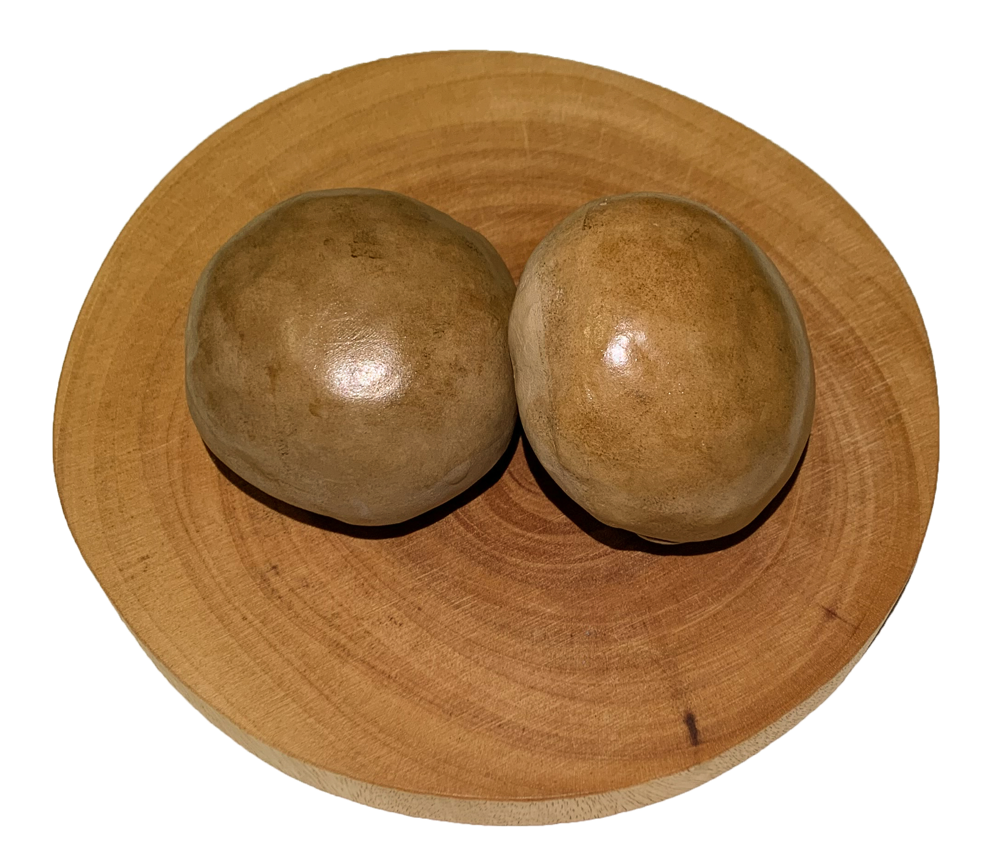

玄米バターロール
素朴 そぼく
シンプルな材料にこだわったバターロール
玄米の香ばしさとバターの香りを楽しめます
アレルギー表示(含まれるもの）
----------------------------------------
乳 小麦 大豆 卵
----------------------------------------
玄米バターロール
国産100％の玄米を使用し、香ばしくしっとりもちもちした食感の香り豊かなパンです
食物繊維、ビタミンE、ビタミンB1、ビタミンB6、
ナイアシン、マグネシウム、カリウム、鉄などの、
普段の生活で不足しがちな栄養素をおいしく取り入れることができます